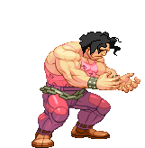
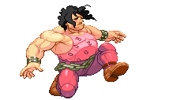
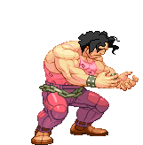
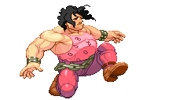
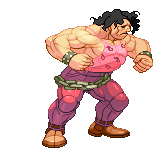
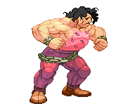
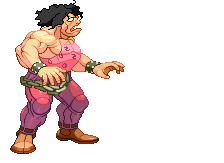

Each character on the roster would have a regular grab, but grapplers have special ones called command grabs. Command grabs are different from regular grabs, usually dealing more damage and executed by a specific input (instead of just one or two buttons like a regular grab). Grapplers want to close the distance between the opponent and use these unique throw attacks. Once in range, these attacks deal a massive amount of damage. However, many of these moves have a slow start and tell tale signs that opponents can pick up on and react, so they require quite a bit of set up. They can also be combo’d into or out of.
Toolkit
 



- Command grabs
- Larger health pool
- Close to mid range physical strikes
- Slower walk and moving speed
Pros
- Lots of health
- Heavy attacks
- Higher stun threshold
Cons
- Low mobility
- Lacks range
- Gets hit easier due to large frame
How should I play as this fighter?
 

Close the gap. Although your moves are slower and telegraphs, closing the distance between you and your opponent gives them less leeway to react to your pressure, allowing you to execute your grabs more smoothly. Your opponent may jump to counter your command grabs, as these grabs are slower and more punishable. Counter their jumps by practicing your timing to use a normal grab on their way down. Don’t let them get out of range, as you lack long range attacks and will need to slowly get close again, which can leave you vulnerable.
How can I beat this fighter?
 Keep them at bay. Grapplers lack range and mobility, so utilize mid to long range attacks to prevent them from getting close. This renders their throws useless, and they will need to work around your attacks to get into range to deal damage. You can also counter their command grabs by jumping. However, be careful about timing as you may jump right into their grab.Examples:
- Hugo Andore (Street Fighter III: 2nd Impact, 1997)
- King (Tekken, 1994)
- Youkai Kusaregedo (Samurai Shodown V, 2003)
Evelynn's Notes
Difficulty: ★ ★ ☆ ☆ ☆Grapplers deal a lot of damage once they get ahold of their opponent. That being said, getting there can be tricky for newer players. If playing against someone who isn’t entirely new to the game, newer grappler players can easily be punished because of their slow movement and lack of range. However, the game plan is very straightforward and requires less thinking. Grapplers also more powerful at an entry level compared to other archetypes.